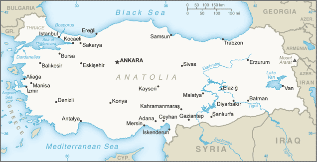
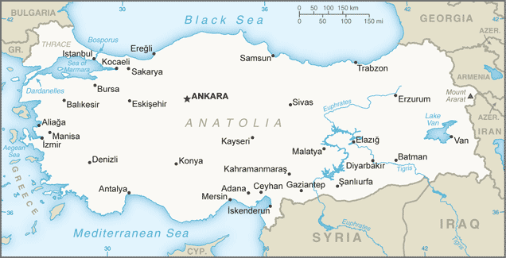

Middle East :: TURKEY
Introduction :: TURKEY
-
Modern Turkey was founded in 1923 from the remnants of the defeated Ottoman Empire by national hero Mustafa KEMAL, who was later honored with the title Ataturk or "Father of the Turks." Under his leadership, the country adopted radical social, legal, and political reforms. After a period of one-party rule, an experiment with multi-party politics led to the 1950 election victory of the opposition Democrat Party and the peaceful transfer of power. Since then, Turkish political parties have multiplied, but democracy has been fractured by periods of instability and military coups (1960, 1971, 1980), which in each case eventually resulted in a return of formal political power to civilians. In 1997, the military again helped engineer the ouster - popularly dubbed a "post-modern coup" - of the then Islamic-oriented government. A coup attempt was made in July 2016 by a faction of the Turkish Armed Forces.Turkey intervened militarily on Cyprus in 1974 to prevent a Greek takeover of the island and has since acted as patron state to the "Turkish Republic of Northern Cyprus," which only Turkey recognizes. A separatist insurgency begun in 1984 by the Kurdistan Workers' Party (PKK) has long dominated the Turkish military's attention and claimed more than 40,000 lives. In 2013, the PKK and the Turkish Government agreed to a cease-fire, but fighting resumed in 2015. Turkey joined the UN in 1945 and in 1952 it became a member of NATO. In 1963, Turkey became an associate member of the European Community; it began accession membership talks with the EU in 2005. Over the past decade, economic reforms have contributed to a growing economy, although economic growth slowed in recent years.From 2015 and continuing in 2016, Turkey witnessed an uptick in terrorist violence. The attacks have included bombings in Ankara, Istanbul, and throughout the predominantly Kurdish southeastern region of Turkey. On 15 July 2016, elements of the Turkish Armed forces attempted a coup at key government and infrastructure locations in Ankara and Istanbul. An estimated 300 people were killed and over 2,000 injured when Turkish citizens took to the streets en masse to confront the coup forces. In response, Turkish Government authorities arrested and/or dismissed thousands of military personnel, journalists, and civil servants, including judges and educators, over their alleged connection with the attempted coup. The government accused followers of an Islamic transnational religious and social movement for allegedly instigating the failed coup and designates the followers as terrorists. Following the failed coup, the Turkish Government instituted a three-month State of Emergency in July 2016 that was extended in October 2016. The Turkish Government is considering changing Turkey to an executive presidency.
Geography :: TURKEY
-
Southeastern Europe and Southwestern Asia (that portion of Turkey west of the Bosporus is geographically part of Europe), bordering the Black Sea, between Bulgaria and Georgia, and bordering the Aegean Sea and the Mediterranean Sea, between Greece and Syria39 00 N, 35 00 EMiddle Easttotal: 783,562 sq kmland: 769,632 sq kmwater: 13,930 sq kmcountry comparison to the world: 37slightly larger than Texastotal: 2,816 kmborder countries (8): Armenia 311 km, Azerbaijan 17 km, Bulgaria 223 km, Georgia 273 km, Greece 192 km, Iran 534 km, Iraq 367 km, Syria 899 km7,200 kmterritorial sea: 6 nm in the Aegean Sea; 12 nm in Black Sea and in Mediterranean Seaexclusive economic zone: in Black Sea only: to the maritime boundary agreed upon with the former USSRtemperate; hot, dry summers with mild, wet winters; harsher in interiorhigh central plateau (Anatolia); narrow coastal plain; several mountain rangesmean elevation: 1,132 melevation extremes: lowest point: Mediterranean Sea 0 mhighest point: Mount Ararat 5,166 mcoal, iron ore, copper, chromium, antimony, mercury, gold, barite, borate, celestite (strontium), emery, feldspar, limestone, magnesite, marble, perlite, pumice, pyrites (sulfur), clay, arable land, hydropoweragricultural land: 49.7%arable land 26.7%; permanent crops 4%; permanent pasture 19%forest: 14.9%other: 35.4% (2011 est.)52,150 sq km (2012)the most densely populated area is found around the Bosporus in the northwest where 20% of the population lives in Istanbul; with the exception of Ankara, urban centers remain small and scattered throughout the interior of Anatolia; an overall pattern of peripheral development exists, particularly along the western Mediterranean coast, and the Tigris and Euphrates River systems in the southeastsevere earthquakes, especially in northern Turkey, along an arc extending from the Sea of Marmara to Lake Vanvolcanism: limited volcanic activity; its three historically active volcanoes; Ararat, Nemrut Dagi, and Tendurek Dagi have not erupted since the 19th century or earlierwater pollution from dumping of chemicals and detergents; air pollution, particularly in urban areas; deforestation; concern for oil spills from increasing Bosporus ship trafficparty to: Air Pollution, Antarctic Treaty, Biodiversity, Climate Change, Desertification, Endangered Species, Hazardous Wastes, Ozone Layer Protection, Ship Pollution, Wetlandssigned, but not ratified: Environmental Modificationstrategic location controlling the Turkish Straits (Bosporus, Sea of Marmara, Dardanelles) that link the Black and Aegean Seas; Mount Ararat, the legendary landing place of Noah's ark, is in the far eastern portion of the country
People and Society :: TURKEY
-
80,274,604 (July 2016 est.)country comparison to the world: 20noun: Turk(s)adjective: TurkishTurkish 70-75%, Kurdish 19%, other minorities 7-12% (2016 est.)Turkish (official), Kurdish, other minority languagesMuslim 99.8% (mostly Sunni), other 0.2% (mostly Christians and Jews)0-14 years: 25.08% (male 10,303,153/female 9,833,713)15-24 years: 16.11% (male 6,605,634/female 6,329,921)25-54 years: 43.15% (male 17,541,137/female 17,094,141)55-64 years: 8.36% (male 3,335,021/female 3,374,965)65 years and over: 7.3% (male 2,603,655/female 3,253,264) (2016 est.)total dependency ratio: 49.7%youth dependency ratio: 38.4%elderly dependency ratio: 11.3%potential support ratio: 8.9% (2015 est.)total: 30.5 yearsmale: 30.1 yearsfemale: 31 years (2016 est.)country comparison to the world: 1100.9% (2016 est.)country comparison to the world: 12516 births/1,000 population (2016 est.)country comparison to the world: 1175.9 deaths/1,000 population (2016 est.)country comparison to the world: 166-1.2 migrant(s)/1,000 population (2016 est.)country comparison to the world: 146the most densely populated area is found around the Bosporus in the northwest where 20% of the population lives in Istanbul; with the exception of Ankara, urban centers remain small and scattered throughout the interior of Anatolia; an overall pattern of peripheral development exists, particularly along the western Mediterranean coast, and the Tigris and Euphrates River systems in the southeasturban population: 73.4% of total population (2015)rate of urbanization: 1.97% annual rate of change (2010-15 est.)Istanbul 14.164 million; ANKARA (capital) 4.75 million; Izmir 3.04 million; Bursa 1.923 million; Adana 1.83 million; Gaziantep 1.528 million (2015)at birth: 1.05 male(s)/female0-14 years: 1.05 male(s)/female15-24 years: 1.04 male(s)/female25-54 years: 1.03 male(s)/female55-64 years: 0.99 male(s)/female65 years and over: 0.8 male(s)/femaletotal population: 1.01 male(s)/female (2016 est.)22.3 (2010 est.)16 deaths/100,000 live births (2015 est.)country comparison to the world: 139total: 18.2 deaths/1,000 live birthsmale: 19.4 deaths/1,000 live birthsfemale: 16.9 deaths/1,000 live births (2016 est.)country comparison to the world: 92total population: 74.8 yearsmale: 72.5 yearsfemale: 77.3 years (2016 est.)country comparison to the world: 1152.03 children born/woman (2016 est.)country comparison to the world: 11573% (2008)5.4% of GDP (2014)country comparison to the world: 1031.71 physicians/1,000 population (2011)2.5 beds/1,000 population (2011)improved:urban: 100% of populationrural: 100% of populationtotal: 100% of populationunimproved:urban: 0% of populationrural: 0% of populationtotal: 0% of population (2015 est.)improved:urban: 98.3% of populationrural: 85.5% of populationtotal: 94.9% of populationunimproved:urban: 1.7% of populationrural: 14.5% of populationtotal: 5.1% of population (2015 est.)NANANA29.4% (2014)country comparison to the world: 361.9% (2014)country comparison to the world: 1232.9% of GDP (2006)country comparison to the world: 142definition: age 15 and over can read and writetotal population: 95%male: 98.4%female: 91.8% (2015 est.)total: 16 yearsmale: 17 yearsfemale: 16 years (2013)total number: 321,866percentage: 3%note: data represent children ages 6-14 (2006 est.)total: 17.8%male: 16.6%female: 20.2% (2014 est.)country comparison to the world: 66
Government :: TURKEY
-
conventional long form: Republic of Turkeyconventional short form: Turkeylocal long form: Turkiye Cumhuriyetilocal short form: Turkiyeetymology: the name means "Land of the Turks"parliamentary republicname: Ankarageographic coordinates: 39 56 N, 32 52 Etime difference: UTC+2 (7 hours ahead of Washington, DC, during Standard Time)daylight saving time: +1hr, begins last Sunday in March; ends last Sunday in October81 provinces (iller, singular - ili); Adana, Adiyaman, Afyonkarahisar, Agri, Aksaray, Amasya, Ankara, Antalya, Ardahan, Artvin, Aydin, Balikesir, Bartin, Batman, Bayburt, Bilecik, Bingol, Bitlis, Bolu, Burdur, Bursa, Canakkale, Cankiri, Corum, Denizli, Diyarbakir, Duzce, Edirne, Elazig, Erzincan, Erzurum, Eskisehir, Gaziantep, Giresun, Gumushane, Hakkari, Hatay, Igdir, Isparta, Istanbul, Izmir (Smyrna), Kahramanmaras, Karabuk, Karaman, Kars, Kastamonu, Kayseri, Kilis, Kirikkale, Kirklareli, Kirsehir, Kocaeli, Konya, Kutahya, Malatya, Manisa, Mardin, Mersin, Mugla, Mus, Nevsehir, Nigde, Ordu, Osmaniye, Rize, Sakarya, Samsun, Sanliurfa, Siirt, Sinop, Sirnak, Sivas, Tekirdag, Tokat, Trabzon (Trebizond), Tunceli, Usak, Van, Yalova, Yozgat, Zonguldak29 October 1923 (republic proclaimed succeeding to the Ottoman Empire)Republic Day, 29 October (1923)history: several previous; latest ratified 9 November 1982amendments: proposed by written consent of at least one-third of Grand National Assembly (GNA) members; adoption of draft amendments requires two debates in plenary GNA session and three-fifths majority vote of all GNA members; the president of the republic can request GNA reconsideration of the amendment and, if readopted by two-thirds majority GNA vote, the president may submit the amendment to a referendum; passage by referendum requires absolute majority vote; amended several times, last in 2016 (2016)civil law system based on various European legal systems notably the Swiss civil codehas not submitted an ICJ jurisdiction declaration; non-party state to the ICCtcitizenship by birth: nocitizenship by descent only: at least one parent must be a citizen of Turkeydual citizenship recognized: yes, but requires prior permission from the governmentresidency requirement for naturalization: 5 years18 years of age; universalchief of state: President Recep Tayyip ERDOGAN (since 10 August 2014)head of government: Prime Minister Binali YILDIRIM (since 22 May 2016); Deputy Prime Ministers Nurettin CANIKLI (since 24 May 2016), Veysi KAYNAK (since 24 May 2016), Mehmet SIMSEK (since 24 November 2015), Tugrul TURKES (since 29 August 2014), Numan KURTULMUS (since 29 August 2014)cabinet: Council of Ministers nominated by the prime minister, appointed by the presidentelections/appointments: president directly elected by absolute majority popular vote in 2 rounds if needed for a 5-year term (eligible for a second term); prime minister appointed by the president from among members of parliament; note - a 2007 constitutional amendment changed the presidential electoral process to direct popular vote; prime minister appointed by the president from among members of the Grand National Assembly of Turkeyelection results: Recep Tayyip ERDOGAN elected president; Recep Tayyip ERDOGAN (AKP) 51.8%, Ekmeleddin IHSANOGLU (independent) 38.4%, Selahattin DEMIRTAS (HDP) 9.8%description: unicameral Grand National Assembly of Turkey or Turkiye Buyuk Millet Meclisi (550 seats; members directly elected in multi-seat constituencies by proportional representation vote to serve 4-year terms)elections: last held on 1 November 2015 (next to be held on June 2019)election results: percent of vote by party - AKP 49.5%, CHP 25.3%, MHP 11.9%, HDP 10.8%, other 2.6%; seats by party - AKP 317, CHP 134, MHP 40, HDP 59; note - only parties surpassing the 10% threshold can win parliamentary seatshighest court: Constitutional Court or Anayasa Mahkemesi (consists of 17 members); Court of Cassation (consists of about 390 judges and organized into civil and penal chambers); Council of State (organized into 15 divisions - 14 judicial and 1 consultative - each with a division head and at least 5 members)judge selection and term of office: Constitutional Court members - 3 appointed by the Grand National Assembly and 14 by the president of the republic from among candidates nominated by the plenary assemblies of the high courts (with the exception of the Court of High Accounts), the Higher Education Council, and from among senior government administrators, lawyers, judges and prosecutors, and Constitutional Court rapporteurs; court president and 2 deputy presidents appointed from among its members for 4-year terms; judges appointed for 12-year, non-renewable terms with mandatory retirement at age 65; Court of Cassation judges appointed by the Supreme Council of Judges and Public Prosecutors (SCJP), a 22-member body of judicial officials; Court of Cassation judges appointed until retirement at age 65; Council of State members appointed by the SCJP and by the president of the republic; members appointed for renewable, 4-year termssubordinate courts: regional appeals courts; basic (first instance) courts, peace courts; military courts; state security courts; specialized courts, including administrative and auditDemocratic Party or DP [Gultekin UYSAL]Felicity Party or SP [Mustafa KAMALAK]Free Cause Party or HUDA PAR [Zekeriya YAPICIOGLU]Grand Unity Party or BBP [Mustafa DESTICI]Justice and Development Party or AKP [Binali YILDRUM]Nationalist Movement Party or MHP [Devlet BAHCELI]Patriotic Party of VP [Dogu PERINCEK]People's Democratic Party or HDP [Selahattin DEMIRTAS and Figen YUKSEKDAG]; note - DEMIRTAS and YUKSEKDAG were detained by Turkish authorities in November 2016 over their alleged links to the PKKRepublican People's Party or CHP [Kemal KILICDAROGLU]Rights and Freedom Party of HAK-PAR [Refik KARACOK]Confederation of Businessmen and Industrialists of Turkey or TUSKON [Rizanur MERAL]; note - the government issued an arrest warrant for MERAL over alleged connection to the July 2016 coup attemptConfederation of Public Sector Unions or KESK [Lami OZGEN, Saziye KOSE, co-chairs]Confederation of Progressive Workers Unions or DISK [Kani BEKO]Independent Industrialists' and Businessmen's Association or MUSIAD [Nail OLPAK]Moral Rights Workers Union or Hak-Is [Mahmut ARSLAN]Turkish Confederation of Employer Associations or TISK [Kudret ONEN]Turkish Confederation of Labor or Turk-Is [Ergun ATALAY]Turkish Confederation of Tradesmen and Craftsmen or TESK [Bendevi PALANDOKEN]Turkish Industrialists' and Businessmen's Association or TUSIAD [Cansen BASARAN-SYMES]Turkish Union of Chambers of Commerce and Commodity Exchanges or TOBB [M. Rifat HISARCIKLIOGLU]ADB (nonregional member), Australia Group, BIS, BSEC, CBSS (observer), CD, CE, CERN (observer), CICA, CPLP (associate observer), D-8, EAPC, EBRD, ECO, EU (candidate country), FAO, FATF, G-20, IAEA, IBRD, ICAO, ICC (national committees), ICRM, IDA, IDB, IEA, IFAD, IFC, IFRCS, IHO, ILO, IMF, IMO, IMSO, Interpol, IOC, IOM, IPU, ISO, ITSO, ITU, ITUC (NGOs), MIGA, NATO, NEA, NSG, OAS (observer), OECD, OIC, OPCW, OSCE, Pacific Alliance (observer), Paris Club (associate), PCA, PIF (partner), SCO (dialogue member), SELEC, UN, UNCTAD, UNESCO, UNHCR, UNIDO, UNIFIL, UNRWA, UNWTO, UPU, WCO, WFTU (NGOs), WHO, WIPO, WMO, WTO, ZCchief of mission: Ambassador Serdar KILIC (since 21 May 2014)chancery: 2525 Massachusetts Avenue NW, Washington, DC 20008telephone: [1] (202) 612-6700FAX: [1] (202) 612-6744consulate(s) general: Boston, Chicago, Houston, Los Angeles, Miami, New Yorkchief of mission: Ambassador John R. BASS (since 20 October 2014)embassy: 110 Ataturk Boulevard, Kavaklidere, 06100 Ankaramailing address: PSC 93, Box 5000, APO AE 09823telephone: [90] (312) 455-5555FAX: [90] (312) 467-0019consulate(s) general: Istanbulconsulate(s): Adanared with a vertical white crescent moon (the closed portion is toward the hoist side) and white five-pointed star centered just outside the crescent opening; the flag colors and designs closely resemble those on the banner of the Ottoman Empire, which preceded modern-day Turkey; the crescent moon and star serve as insignia for Turkic peoples; according to one interpretation, the flag represents the reflection of the moon and a star in a pool of blood of Turkish warriorsstar and crescent; national colors: red, whitename: "Istiklal Marsi" (Independence March)lyrics/music: Mehmet Akif ERSOY/Zeki UNGORnote: lyrics adopted 1921, music adopted 1932; the anthem's original music was adopted in 1924; a new composition was agreed upon in 1932
Economy :: TURKEY
-
Turkey's largely free-market economy is increasingly driven by its industry and service sectors, although its traditional agriculture sector still accounts for about 25% of employment. An aggressive privatization program has reduced state involvement in basic industry, banking, transport, and communication. An emerging cadre of middle-class entrepreneurs is adding dynamism to the economy and expanding production beyond the traditional textiles and clothing sectors. The automotive, petrochemical, and electronics industries are rising in importance and have surpassed textiles within Turkey's export mix.Oil began to flow through the Baku-Tbilisi-Ceyhan pipeline in May 2006, marking a major milestone that has brought up to 1 million barrels per day from the Caspian region to market. The joint Turkish-Azeri Trans Anatolian Natural Gas Pipeline (TANAP) is moving forward to help transport Caspian gas to Europe through Turkey, helping to address Turkey's dependence on imported gas, which currently meets 98% of its energy needs.After Turkey experienced a severe financial crisis in 2001, Ankara adopted financial and fiscal reforms as part of an IMF program. The reforms strengthened the country's economic fundamentals and ushered in an era of strong growth averaging more than 6% annually until 2008. Global economic conditions and tighter fiscal policy caused GDP to contract in 2009, but Turkey's well-regulated financial markets and banking system helped the country weather the global financial crisis, and GDP rebounded strongly to around 9% in 2010-11, as exports returned to normal levels following the crisis. Two rating agencies upgraded Turkey's debt to investment grade in 2012 and 2013, and Turkey's public sector debt to GDP ratio fell to 33% in 2014. The stock value of Foreign Direct Investment reached nearly $195 billion at yearend 2014.Despite these positive trends, GDP growth dropped to 4.4% in 2013 and 2.9% in 2014. Growth slowed considerably in the last quarter of 2014, largely due to lackluster consumer demand both domestically and in Europe, Turkey’s most important export market. High interest rates have also contributed to the slowdown in growth, as Turkey sharply increased interest rates in January 2014 in order to strengthen the country’s currency and reduce inflation. Turkey then cut rates in February 2015 in a bid to spur economic growth.The Turkish economy retains significant weaknesses. Specifically, Turkey's relatively high current account deficit, uncertain commitment to structural reform, and turmoil within Turkey's neighborhood leave the economy vulnerable to destabilizing shifts in investor confidence. Turkey also remains overly dependent on often volatile, short-term investment to finance its large current account deficit.$1.589 trillion (2015 est.)$1.53 trillion (2014 est.)$1.487 trillion (2013 est.)note: data are in 2015 US dollarscountry comparison to the world: 18$733.6 billion (2015 est.)3.8% (2015 est.)2.9% (2014 est.)4.2% (2013 est.)country comparison to the world: 64$20,400 (2015 est.)$19,900 (2014 est.)$19,500 (2013 est.)note: data are in 2015 US dollarscountry comparison to the world: 8618.6% of GDP (2015 est.)20.1% of GDP (2014 est.)20.7% of GDP (2013 est.)country comparison to the world: 126household consumption: 68.6%government consumption: 15.7%investment in fixed capital: 20.3%investment in inventories: -1.7%exports of goods and services: 27.9%imports of goods and services: -30.8% (2015 est.)agriculture: 8.7%industry: 27%services: 67.8% (2015 est.)tobacco, cotton, grain, olives, sugar beets, hazelnuts, pulses, citrus; livestocktextiles, food processing, automobiles, electronics, mining (coal, chromate, copper, boron), steel, petroleum, construction, lumber, paper3.3% (2015 est.)country comparison to the world: 6629.67 millionnote: about 1.2 million Turks work abroad (2015 est.)country comparison to the world: 23agriculture: 25.5%industry: 26.2%services: 48.4% (2010)10.3% (2015 est.)10% (2014 est.)country comparison to the world: 11916.9% (2010 est.)lowest 10%: 2.1%highest 10%: 30.3% (2008)40.2 (2010)43.6 (2003)country comparison to the world: 61revenues: $177.7 billionexpenditures: $186 billion (2015 est.)24.2% of GDP (2015 est.)country comparison to the world: 126-1.1% of GDP (2015 est.)country comparison to the world: 5934.7% of GDP (2015 est.)35% of GDP (2014 est.)note: data cover central government debt, and excludes debt instruments issued (or owned) by government entities other than the treasury; the data include treasury debt held by foreign entities; the data exclude debt issued by subnational entities, as well as intra-governmental debt; intra-governmental debt consists of treasury borrowings from surpluses in the social funds, such as for retirement, medical care, and unemployment; debt instruments for the social funds are sold at public auctionscountry comparison to the world: 127calendar year7.7% (2015 est.)8.9% (2014 est.)country comparison to the world: 1985.25% (31 December 2011)15% (22 December 2009)country comparison to the world: 7513.66% (31 December 2015 est.)13.23% (31 December 2014 est.)country comparison to the world: 51$107.1 billion (31 December 2015 est.)$111.3 billion (31 December 2014 est.)country comparison to the world: 33$474.7 billion (31 December 2014 est.)$425.1 billion (31 December 2013 est.)country comparison to the world: 25$581.8 billion (31 December 2015 est.)$618.6 billion (31 December 2014 est.)country comparison to the world: 23$308.8 billion (31 December 2015 est.)$201.8 billion (31 December 2014 est.)$306.7 billion (31 December 2013 est.)country comparison to the world: 35-$32.19 billion (2015 est.)-$43.55 billion (2014 est.)country comparison to the world: 190$152 billion (2015 est.)$168.9 billion (2014 est.)country comparison to the world: 29apparel, foodstuffs, textiles, metal manufactures, transport equipmentGermany 9.3%, UK 7.3%, Iraq 5.9%, Italy 4.8%, US 4.5%, France 4.1% (2015)$200.1 billion (2015 est.)$232.5 billion (2014 est.)country comparison to the world: 22machinery, chemicals, semi-finished goods, fuels, transport equipmentChina 12%, Germany 10.3%, Russia 9.9%, US 5.4%, Italy 5.1% (2015)$110.5 billion (31 December 2015 est.)$127.3 billion (31 December 2014 est.)country comparison to the world: 21$397.8 billion (31 December 2015 est.)$408.2 billion (31 December 2014 est.)country comparison to the world: 30$185.9 billion (31 December 2015 est.)$169.1 billion (31 December 2014 est.)country comparison to the world: 30$45.57 billion (31 December 2015 est.)$40.48 billion (31 December 2014 est.)country comparison to the world: 44Turkish liras (TRY) per US dollar -2.72 (2015 est.)2.1885 (2014 est.)2.1885 (2013 est.)1.8 (2012 est.)1.675 (2011 est.)
Energy :: TURKEY
-
electrification - total population: 100% (2016)239 billion kWh (2014 est.)country comparison to the world: 21207 billion kWh (2014 est.)country comparison to the world: 202.7 billion kWh (2014 est.)country comparison to the world: 528 billion kWh (2014 est.)country comparison to the world: 3270 million kW (2014 est.)country comparison to the world: 1861% of total installed capacity (2012 est.)country comparison to the world: 1300% of total installed capacity (2012 est.)country comparison to the world: 19434.3% of total installed capacity (2012 est.)country comparison to the world: 654.6% of total installed capacity (2012 est.)country comparison to the world: 6248,510 bbl/day (2015 est.)country comparison to the world: 598,475 bbl/day (2015 est.)country comparison to the world: 74513,500 bbl/day (2015 est.)country comparison to the world: 24300 million bbl (1 January 2016 es)country comparison to the world: 56613,600 bbl/day (2015 est.)country comparison to the world: 35860,800 bbl/day (2015 est.)country comparison to the world: 28154,600 bbl/day (2015 est.)country comparison to the world: 41503,700 bbl/day (2015 est.)country comparison to the world: 16479 million cu m (2014 est.)country comparison to the world: 7248.72 billion cu m (2014 est.)country comparison to the world: 17633 million cu m (2014 est.)country comparison to the world: 3949.26 billion cu m (2014 est.)country comparison to the world: 85.012 billion cu m (1 January 2016 es)country comparison to the world: 85319 million Mt (2013 est.)country comparison to the world: 21
Communications :: TURKEY
-
total subscriptions: 11,493,057subscriptions per 100 inhabitants: 14 (July 2015 est.)country comparison to the world: 19total: 73.639 millionsubscriptions per 100 inhabitants: 93 (July 2015 est.)country comparison to the world: 21general assessment: comprehensive telecommunications network undergoing rapid modernization and expansion, especially in mobile-cellular servicesdomestic: additional digital exchanges are permitting a rapid increase in subscribers; the construction of a network of technologically advanced intercity trunk lines, using both fiber-optic cable and digital microwave radio relay, is facilitating communication between urban centers; remote areas are reached by a domestic satellite system; combined fixed-line and mobile-cellular teledensity is roughly 105 telephones per 100 personsinternational: country code - 90; international service is provided by the SEA-ME-WE-3 submarine cable and by submarine fiber-optic cables in the Mediterranean and Black Seas that link Turkey with Italy, Greece, Israel, Bulgaria, Romania, and Russia; satellite earth stations - 12 Intelsat; mobile satellite terminals - 328 in the Inmarsat and Eutelsat systems (2015)Turkish Radio and Television Corporation (TRT) operates multiple TV and radio networks and stations; multiple privately owned national television stations and up to 300 private regional and local television stations; multi-channel cable TV subscriptions available; more than 1,000 private radio broadcast stations (2009).trtotal: 42.681 millionpercent of population: 53.7% (July 2015 est.)country comparison to the world: 19
Transportation :: TURKEY
-
number of registered air carriers: 15inventory of registered aircraft operated by air carriers: 531annual passenger traffic on registered air carriers: 96,604,665annual freight traffic on registered air carriers: 2,882.162 million mt-km (2015)TC (2016)98 (2013)country comparison to the world: 58total: 91over 3,047 m: 162,438 to 3,047 m: 381,524 to 2,437 m: 17914 to 1,523 m: 16under 914 m: 4 (2013)total: 71,524 to 2,437 m: 1914 to 1,523 m: 4under 914 m: 2 (2013)20 (2013)gas 12,603 km; oil 3,038 km (2013)total: 12,008 kmstandard gauge: 12,008 km 1.435-m gauge (3,216 km electrified) (2014)country comparison to the world: 20total: 385,754 kmpaved: 352,268 km (includes 2,127 km of expressways)unpaved: 33,486 km (2012)country comparison to the world: 181,200 km (2010)country comparison to the world: 59total: 629by type: bulk carrier 102, cargo 281, chemical tanker 80, container 42, liquefied gas 6, passenger 2, passenger/cargo 60, petroleum tanker 25, refrigerated cargo 1, roll on/roll off 29, specialized tanker 1foreign-owned: 1 (Italy 1)registered in other countries: 645 (Albania 1, Antigua and Barbuda 7, Azerbaijan 1, Bahamas 3, Barbados 1, Belize 16, Brazil 1, Cambodia 15, Comoros 8, Cook Islands 4, Curacao 5, Cyprus 1, Dominica 1, Georgia 14, Italy 4, Kazakhstan 1, Liberia 16, Malta 233, Marshall Islands 70, Moldova 18, Panama 62, Russia 101, Saint Kitts and Nevis 18, Saint Vincent and the Grenadines 13, Sierra Leone 9, Slovakia 1, Tanzania 13, Togo 4, Tuvalu 1, unknown 3) (2010)country comparison to the world: 18major seaport(s): Aliaga, Ambarli, Diliskelesi, Eregli, Izmir, Kocaeli (Izmit), Mersin (Icel), Limani, Yarimcacontainer port(s) (TEUs): Ambarli (2,121,549), Mersin (Icel) (1,126,866)LNG terminal (import): Izmir Aliaga, Marmara Ereglisi
Military and Security :: TURKEY
-
Turkish Armed Forces (TSK): Turkish Land Forces (Turk Kara Kuvvetleri), Turkish Naval Forces (Turk Deniz Kuvvetleri; includes naval air and naval infantry), Turkish Air Forces (Turk Hava Kuvvetleri) (2013)21-41 years of age for male compulsory military service; 18 years of age for voluntary service; 12-month conscript obligation for non-university graduates, 6-12 months for university graduates (graduates of higher education may perform 6 months of military service as short-term privates, or 12 months as reserve officers); conscripts are called to register at age 20, for service at 21; women serve in the Turkish Armed Forces only as officers; reserve obligation to age 41; Turkish citizens with a residence or work permit who have worked abroad for at least 3 years (1095 days) can be exempt from military service in exchange for 6,000 EUR or its equivalent in foreign currencies; a law passed in December 2014 introduced a one-time payment scheme which exempted Turkish citizens 27 and older from conscription in exchange for a payment of $8,150 (2013)2.1% of GDP (2015)2.36% of GDP (2014)2.39% of GDP (2013)2.31% of GDP (2012)2.28% of GDP (2011)country comparison to the world: 35the ruling Justice and Development Party (AKP) has actively pursued the goal of asserting civilian control over the military since first taking power in 2002; the Turkish Armed Forces (TSK) role in internal security has been significantly reduced; the TSK leadership continues to be an influential institution within Turkey, but plays a much smaller role in politics; the Turkish military remains focused on the threats emanating from the Syrian civil war, Russia's actions in Ukraine, and the PKK insurgency; primary domestic threats are listed as fundamentalism (with the definition in some dispute with the civilian government), separatism (Kurdish discontent), and the extreme left wing; Ankara strongly opposed establishment of an autonomous Kurdish region in Iraq; an overhaul of the Turkish Land Forces Command (TLFC) taking place under the "Force 2014" program is to produce 20-30% smaller, more highly trained forces characterized by greater mobility and firepower and capable of joint and combined operations; the TLFC has taken on increasing international peacekeeping responsibilities including in Afghanistan; the Turkish Navy is a regional naval power that wants to develop the capability to project power beyond Turkey's coastal waters; the Navy is heavily involved in NATO, multinational, and UN operations; its roles include control of territorial waters and security for sea lines of communications; the Turkish Air Force adopted an "Aerospace and Missile Defense Concept" in 2002 and has initiated project work on an integrated missile defense system; Air Force priorities include attaining a modern deployable, survivable, and sustainable force structure, and establishing a sustainable command and control system; Turkey is a NATO ally and hosts NATO's Land Forces Command in Izmir, as well as the AN/TPY-2 radar as part of NATO Missile Defense (2014)
Transnational Issues :: TURKEY
-
complex maritime, air, and territorial disputes with Greece in the Aegean Sea; status of north Cyprus question remains; Syria and Iraq protest Turkish hydrological projects to control upper Euphrates waters; Turkey has expressed concern over the status of Kurds in Iraq; in 2009, Swiss mediators facilitated an accord reestablishing diplomatic ties between Armenia and Turkey, but neither side has ratified the agreement and the rapprochement effort has faltered; Turkish authorities have complained that blasting from quarries in Armenia might be damaging the medieval ruins of Ani, on the other side of the Arpacay valleyrefugees (country of origin): at least 103,000 (Iraq) (2014); 2,790,767 (Syria) (2016)IDPs: 954,000 (displaced from 1984-2005 because of fighting between the Kurdish PKK and Turkish military; most IDPs are Kurds from eastern and southeastern provinces; no information available on persons displaced by development projects) (2015)stateless persons: 780 (2015)key transit route for Southwest Asian heroin to Western Europe and, to a lesser extent, the US - via air, land, and sea routes; major Turkish and other international trafficking organizations operate out of Istanbul; laboratories to convert imported morphine base into heroin exist in remote regions of Turkey and near Istanbul; government maintains strict controls over areas of legal opium poppy cultivation and over output of poppy straw concentrate; lax enforcement of money-laundering controls